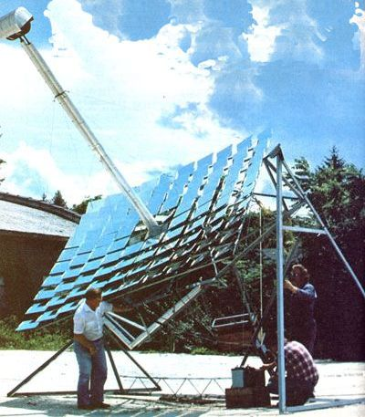

As we recently reported (see MOTHER NO. 52, pages 94-95), a fellow named Charles Curnutt-out in Twentynine Palms, California-has developed a rather Ingenious solar furnace that almost anyone should be able to build, set up in his or her back yard, and use to-among other things-make enough solar-heated steam to run a steam engine.
And, as we also reported, some of MOTHER's researchers are now hard at work refining Mr. Curnutt's solar furnace so that eventually-we hope-we can publish plans for the finished version of the machine and we can ail get on with the construction of our backyard solarpowered steam rigs.
And that's about where everything still stands as this issue of your favorite magazine goes to press . . . but we thought maybe you'd like to see a picture of MOTHER's test version of Charles Curnutt's invention, just so's you'd know that we are on the job!
|
 |
|
|